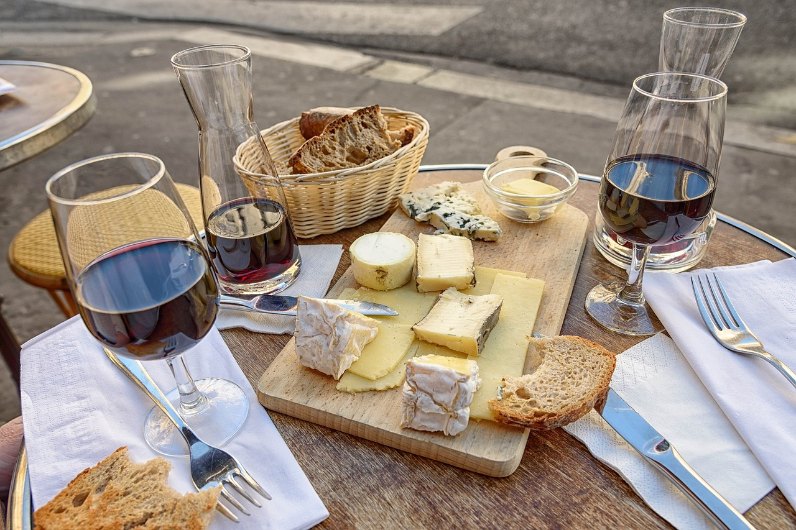
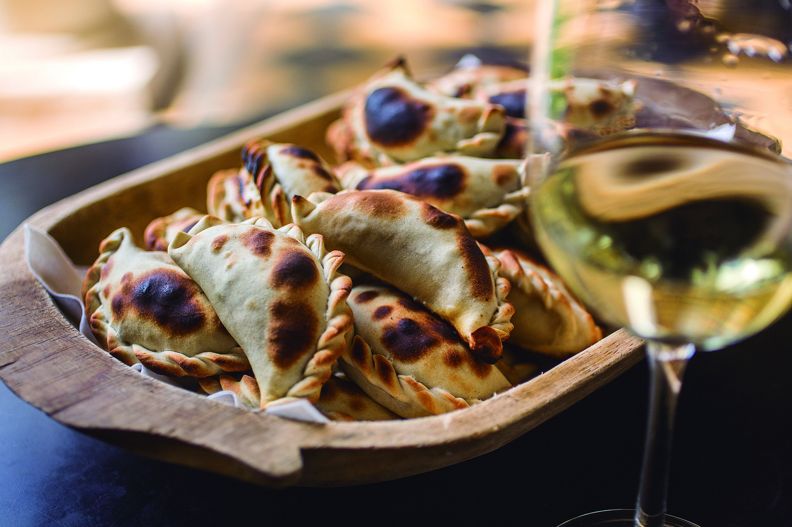
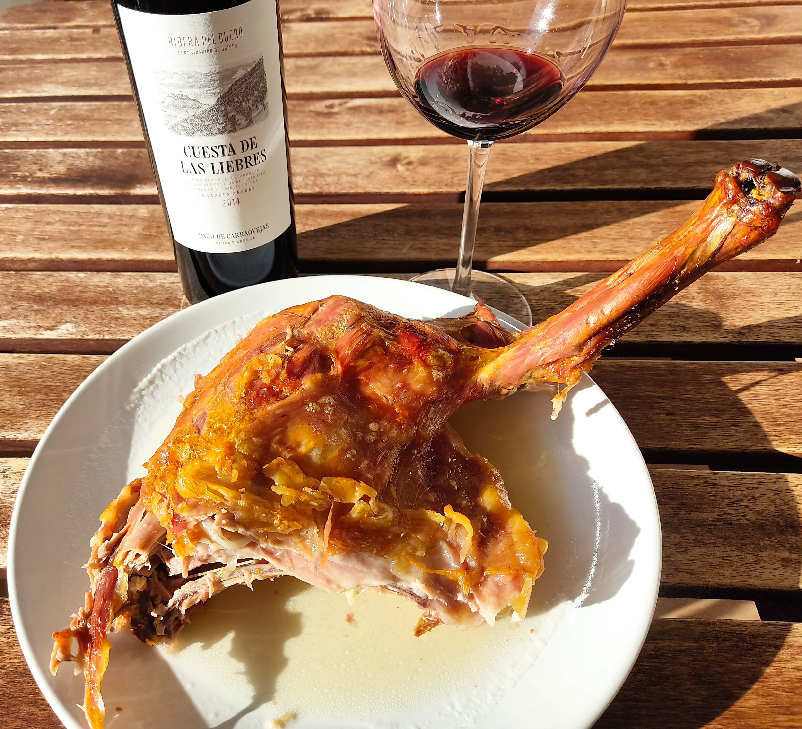
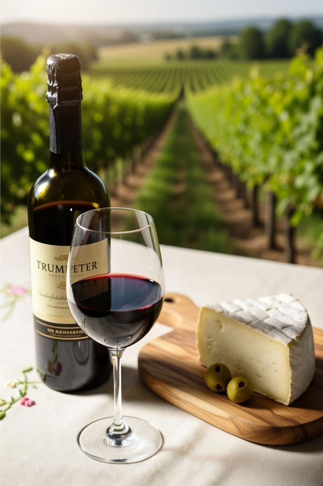
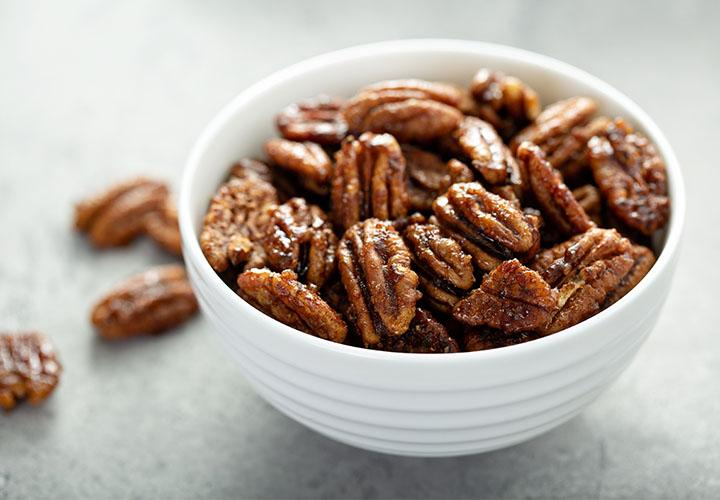

La altitud y el clima extremo dan a los vinos de Chilecito una acidez vibrante y frescura que los hacen ideales para maridar con la cocina riojana: sabores intensos, ahumados, picantes y grasos. Los maridajes aquí no son formales: se viven en mesas largas, con charlas y risas, muchas veces en patios con vista a la sierra o dentro de las bodegas mismas.

Una mesa típica de maridaje en una bodega boutique
Los chefs y enólogos locales crean experiencias que resaltan lo mejor de ambos mundos: el Torrontés con empanadas, el Malbec con cabrito, la Bonarda con quesos de cabra. Muchas bodegas y restaurantes ofrecen maridajes guiados con 4-6 pasos.

El Torrontés joven y floral (notas de jazmín, durazno y cítricos) corta la grasa de la empanada de carne frita. El dulzor leve del vino equilibra el picante del ají y el comino. Experiencia clásica en casi todas las bodegas y peñas.

Malbec con 12-18 meses de barrica: frutas negras, vainilla, pimienta y taninos firmes. Perfecto para el cabrito jugoso y ahumado. La acidez del vino limpia la boca del sabor intenso de la carne. Maridaje estrella en asados y restaurantes como El Fogón.

Syrah especiado y con notas de pimienta negra y mora. Combina ideal con quesos semiduros de cabra (cremosos y con carácter) y aceitunas verdes o negras locales. Experiencia elegante y sencilla, muy común en catas privadas.

Bonarda fresca, frutal y con baja tanicidad. Va perfecto con postres locales: nueces caramelizadas, arrope de chañar, dulce de membrillo o rapadura. Maridaje dulce-salado que cierra cualquier comida con broche de oro.
Las mejores experiencias: reserva un maridaje privado en bodega boutique o cena en peña con maridaje comentado. ¡Preguntá por opciones personalizadas!